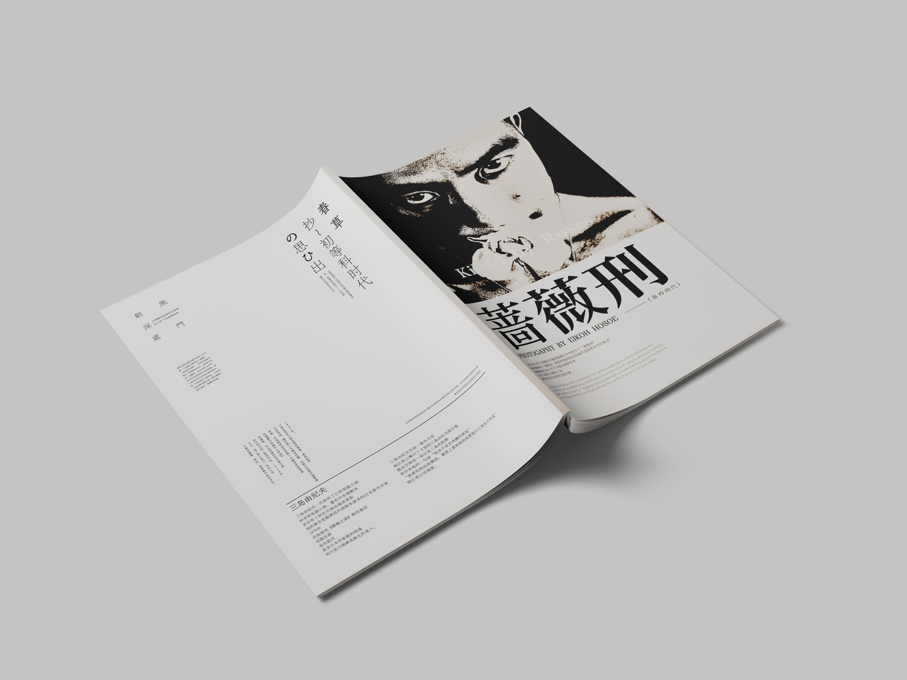

← 返回所有作品 BACK TO ALL WORKS16 / 17
视觉设计 · 平面设计 · 书籍版式 / 2021
《蔷薇刑》重排
BARAKEI EDITORIAL REDESIGN
结合《蔷薇刑》写真集与三岛由纪夫生平的编辑设计练习。

01 / OVERVIEW
结合《蔷薇刑》写真集与三岛由纪夫生平的编辑设计练习。
以细江英公的《蔷薇刑》写真集和三岛由纪夫的生平经历为文本，重新组织图像、文字、节奏与留白，通过版面序列建立新的阅读情绪。
- 年份 / YEAR
- 2021
- 类型 / TYPE
- 视觉设计 · 平面设计 · 书籍版式
- 工具 / TOOLS
- Illustrator / Photoshop / InDesign
- 角色 / ROLE
- 独立设计 / INDEPENDENT
02 / PROCESS + OUTPUT
02 IMAGES